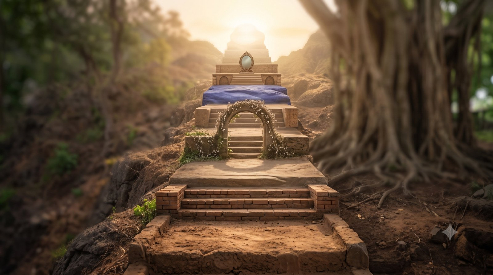

क्या आपने कभी सोचा है कि कुछ लोग पूरा जीवन एक ही ढर्रे पर क्यों जीते हैं? कोई केवल अपने लिए, कोई केवल परिवार के लिए, और कोई पूरी तरह गुरु के लिए।
आचार्य जी इसका उत्तर हमारे भीतर के सात चक्रों में बताते हैं। और साथ ही यह भी कि एक समर्थ गुरु इस यात्रा को कैसे बदल सकता है।
एक चक्र, कई जन्म
चक्र (energy centres) हमारी चेतना के स्तर हैं। आचार्य जी कहते हैं कि एक-एक चक्र ऊपर उठने में कई जन्म लग जाते हैं।
"एक-एक चक्र ऊपर उठने के लिए कई जन्म लगते हैं।"
लेकिन समर्थ गुरु एक ही साधना में तीन-चार चक्र एक साथ उठा सकता है। किसी-किसी का तो पूरा आरोहण, मूलाधार से सहस्रार तक, हो सकता है। ठीक वैसे ही जैसे वाल्या डाकू वाल्मीकि ऋषि बन गया।
सात चक्र, सात तरह का जीवन
हर चक्र का एक केंद्रीय भाव है। सरल शब्दों में:
- मूलाधार: केवल मैं
- स्वाधिष्ठान: मैं और मेरा परिवार
- मणिपुर: सेवा, पर अपने लाभ के लिए
- हृदय (अनाहत): करुणा, पर बिना विवेक
- विशुद्धि: नेतृत्व, संसार बदलने का तेज
- आज्ञा: पूर्ण शरणागति, गुरु के लिए जीवन
- सहस्रार: गुरु या परमेश्वर में लय

क्या मेरा जीवन केवल मेरे लिए है?
मूलाधार पर जीने वाला मनुष्य केवल स्वार्थ के लिए जीता है। अपने लिए वह मरने-मारने तक को तैयार रहता है।
स्वाधिष्ठान पर जीने वाला थोड़ा आगे है, पर उसकी दुनिया "मैं और मेरा परिवार" तक ही सीमित है। आचार्य जी पूछते हैं, ऐसे लोग आपने देखे हैं कि नहीं, जो बस इतना ही जीवन जीते हैं?
सेवा या सौदा?
मणिपुर चक्र तक के लोग संसार की सहायता करते हैं, पर उसमें अपना और परिवार का लाभ ढूँढते हैं। नाम और यश इनकी प्रेरणा होते हैं।
समाज सेवा के नाम पर भी इनकी शर्त एक ही होती है: "पहले हमारा लाभ दिखाओ, तभी हम करेंगे।"
क्या मेरी सेवा के पीछे भी कोई छुपा हुआ सौदा है?
क्या करुणा के साथ मेरे पास विवेक भी है?
हृदय चक्र जागृत होने पर करुणा आती है। पर अकेली करुणा को आचार्य जी idiotic compassion, यानी विवेकहीन करुणा कहते हैं।
ऐसे लोग पूरे महीने का वेतन मंदिर में दे आते हैं और घर-परिवार को भूखा रख देते हैं। वे सोचते हैं, "मेरा जीवन बिगड़ जाए तो भी चलेगा, पर मदद करते रहनी है।" बुद्धि का उपयोग वे करते ही नहीं।
आचार्य जी सीता माता का उदाहरण देते हैं। लक्ष्मण रेखा खींची गई थी, कहा गया था कि बाहर किसी को भिक्षा मत देना। सीता माता रावण को पहचान नहीं सकीं, और उन्हें उसके साथ जाना पड़ा।
गुरु की बात न मानकर, अपनी मर्ज़ी से अपात्र को भी दान देते रहना, यही वह स्थिति है जब केवल हृदय चक्र जागृत है।
क्या मेरी करुणा मुझे और मेरे अपनों को ही नुकसान तो नहीं पहुँचा रही?
नेतृत्व से शरणागति तक
विशुद्धि चक्र वाले लोग तेजस्वी होते हैं। वे नेतृत्व कर सकते हैं, संसार बदल सकते हैं। वे दूसरों के लिए जीते हैं, पर मन में यह भाव भी रहता है कि "मेरा भी नाम होगा।"
आज्ञा चक्र तक पहुँचे लोग गुरु के लिए जीते हैं। वे पूर्ण शरणागत (complete surrender) होते हैं: केवल गुरु, गुरु, गुरु। गुरु का कार्य ही उनके जीवन का ध्येय होता है।
और सहस्रार पर व्यक्ति स्वयं गुरु या परमेश्वर में लीन हो चुका होता है।
बाहर दिखती सात दुनियाएँ
इन सात स्तरों के कारण ही बाहर हमें सात अलग-अलग दुनियाएँ दिखाई देती हैं। और अक्सर लोगों का पूरा जीवन, बल्कि कई जन्म, एक ही स्तर पर बीत जाते हैं।
मैं आज किस चक्र की दुनिया में जी रहा हूँ?
शक्तिपात: जन्मों का फ़ास्ट फ़ॉरवर्ड
यहीं गुरु की भूमिका समझ में आती है। शक्तिपात (transmission of spiritual energy by the Guru) में जब साधक की कुंडलिनी (the dormant spiritual energy) ऊपर उठाई जाती है, तो गुरु उतने जन्मों के बंधन तोड़ देता है। उतने जीवन एक साथ आगे बढ़ा देता है।
"साधना मतलब खेल मत समझना।"
जब पुरानी दुनिया छूट जाती है
कुंडलिनी उठने के बाद अचानक आप भूल जाते हैं कि पहले आप कौन थे और अब कौन हैं। बहुत से लोग भूल ही जाते हैं कि उनकी पुरानी दुनिया क्या थी, वे किन गलत लोगों के साथ रहते थे।
आचार्य जी कहते हैं, कुछ दिनों में आप भी अनुभव करेंगे। या तो बुरे लोग अपने आप आपको छोड़ देंगे, या आपको उनसे दूर जाने की इच्छा होगी, या वे आपसे जुड़कर स्वयं अच्छे बन जाएँगे।
"यह मेरी गारंटी है।"
मुख्य बातें
- एक-एक चक्र ऊपर उठने में कई जन्म लगते हैं, पर समर्थ गुरु एक साधना में तीन-चार चक्र उठा सकता है।
- सात चक्र सात तरह के जीवन हैं: स्वार्थ, परिवार, लाभ वाली सेवा, विवेकहीन करुणा, नेतृत्व, शरणागति और परमेश्वर में लय।
- करुणा के साथ विवेक और गुरु की आज्ञा आवश्यक है, वरना वह विवेकहीन करुणा बन जाती है।
- शक्तिपात में गुरु जन्मों के बंधन तोड़कर जीवन आगे बढ़ा देता है, इसलिए साधना खेल नहीं है।
- कुंडलिनी उठने के बाद बुरी संगति अपने आप छूटती है या बदल जाती है।